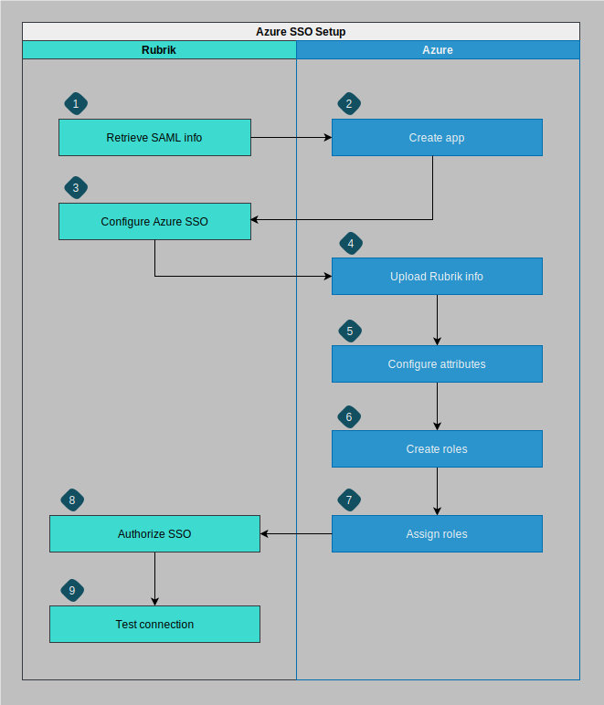

Azure SSO
Configuring single sign-on with Azure involves several individual tasks, which must be performed in the correct order.
Setting up single sign-on (SSO) on Azure involves several discrete tasks, which you perform through the Azure portal and RSC. The order in which you complete these tasks is important because the later tasks build on the results of earlier tasks.
The following diagram shows the sequence of tasks involved in setting up Azure SSO with RSC.

- Retrieve SAML info: Azure requires you to retrieve the entity ID and callback URL values from RSC.
- Create app: In Azure, configuring SSO requires you to create a non-gallery enterprise application through the Azure portal using the SAML 2.0 protocol.
- Configure Azure SSO: RSC requires you to upload the Azure metadata file. With the non-gallery enterprise application, you can download the Azure SAML metadata file, which is required by RSC to configure SSO.
- Upload Rubrik info: Azure requires you to upload the Rubrik metadata file to the enterprise application. You can download the Rubrik metadata file from RSC.
- Configure attributes: RSC requires you to configure the attributes, claims, and name ID in the Azure portal for SSO authentication. You must ensure to use your email address to configure the name ID in Azure portal.
- Create roles: Azure requires you to create custom app roles to determine the permissions for user accounts that log in to RSC using Azure SSO.
- Assign roles: Azure requires you to assign the custom app roles to user accounts who need SSO access to RSC.
- Authorize SSO: After creating Azure custom app roles and assigning the roles to user accounts in Azure SSO groups, RSC requires you to create RSC SSO group roles or use existing roles and authorize RSC SSO groups by mapping Azure custom app roles to RSC SSO group roles.
- Test connection: To verify whether the SSO connection has been established and that the appropriate SAML attributes have been correctly received from Azure, RSC requires you to test the SSO connection.